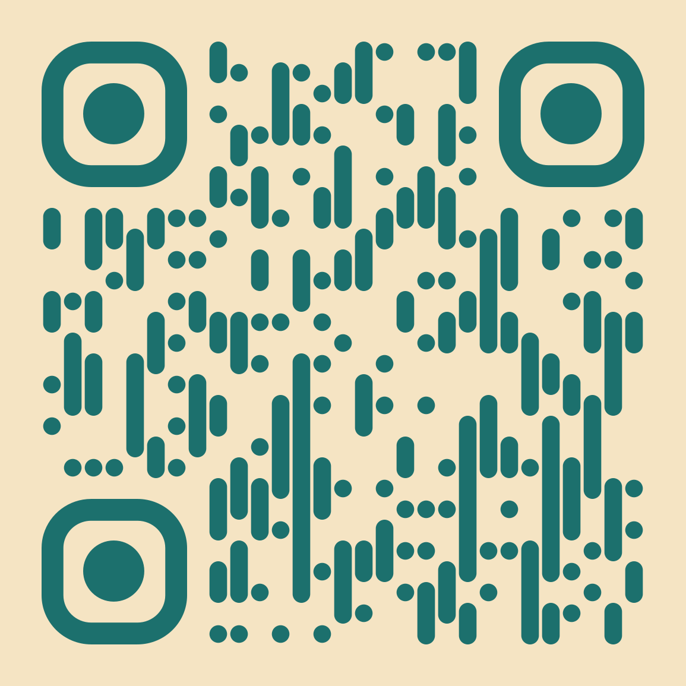

History and International Studies student, founder, researcher and builder from Brunei Darussalam exploring how technology and AI can create meaningful social impact.
Early-stage AI stress-support companion.
AI for Asia Fellowship 2026.
AI governance & ASEAN technology policy.
An early-stage AI companion designed to help people recognise and respond to stress before it peaks.
TRY THE EARLY EXPERIENCEI'm Waznah binti Haji Mohd Sallehin — a 2nd-year undergraduate at Universiti Brunei Darussalam, Faculty of Arts and Social Sciences, majoring in History and International Studies.
I started with a technical foundation in Computer Science, IT and network engineering, but moved into History and International Studies because I became increasingly interested in the people, systems, institutions and global forces behind technology.
Today, I work across technology, entrepreneurship, research and youth initiatives. My current work includes building i.lec, contributing to MindBridge, participating in regional and international programmes, and researching responsible AI and technology governance.
"I build to learn, and I learn to build better."
A blend of technical, research, entrepreneurial and communication capabilities.
Understanding the problem, context and people involved.
Defining scope, goals and the most meaningful approach.
Building early, testable versions to learn quickly.
Developing with care for quality, safety and usability.
Testing, iterating and improving based on feedback.
Documenting, presenting and learning from the process.
AI-Assisted Development: I use AI tools to enhance productivity, explore ideas and support learning. However, all final work is reviewed, refined and validated manually to ensure quality, safety and alignment with real-world goals. AI is a collaborator, not a replacement for thoughtful engineering.
Work spanning HealthTech, AI governance, social impact and digital innovation.
An early-stage AI companion designed to help people recognise and respond to stress before it peaks. i.lec is already running in its early stage — not merely an idea or concept.
Try the current experience. i.lec is an early-stage product being actively developed — your feedback helps shape the next version.

Digital advocacy campaign for sign language awareness in Brunei Darussalam. Led by ETOILES under KESAN Catalyst Plus 2026 to promote inclusivity between hearing and Deaf communities.
Exploring the environmental and governance dimensions of AI infrastructure in Southeast Asia.
This capstone project examines the environmental impact of AI infrastructure, focusing on data centre energy consumption and environmental disclosure practices in Brunei and Malaysia. It proposes policy recommendations toward an ASEAN-level governance framework for responsible AI infrastructure. My contribution particularly highlighted the Brunei-focused research.
A cross-border trio working on AI infrastructure governance across Brunei and Malaysia — curious what the paper actually covers? Open the summary below.
As AI adoption accelerates across Southeast Asia, the physical infrastructure behind it — data centres — has quietly become one of the region's fastest-growing sources of energy demand and environmental impact. Yet disclosure and governance frameworks have not kept pace.
Our paper asks: how can Brunei and Malaysia move toward transparent, comparable environmental disclosure for AI-related data centre infrastructure — and what would an ASEAN-level framework look like?
AI's environmental footprint is often invisible in policy conversations. This paper contributes to the emerging conversation on responsible AI infrastructure — connecting technology, climate, and regional governance across Southeast Asia.
Note: This summary is for informational purposes. Publication status and policy adoption are not claimed. Full paper is not publicly available at this time.
Regional and international programmes that have shaped my work and perspective.
Outstanding Fellow (personal recognition). Team 7_Elevan capstone received a Distinction Award. Research focus: AI infrastructure, environmental disclosure and ASEAN governance.
Sessions beginning September 2026. Exploring the foundations of U.S.-ASEAN relations and regional cooperation.
Startup-focused regional programme. Connected to my work as founder of i.lec.
Focused on learning about the UN Young Professionals Programme.
Youth and community development and project-building experience.
Personal recognition as Outstanding Fellow. Team 7_Elevan's capstone received a Distinction Award for research on AI infrastructure, environmental disclosure and ASEAN governance.
Exploring AI for social impact through hands-on product development.
An early-stage AI companion designed to help people recognise and respond to stress before it peaks. Currently operating with an MVP/prototype.
A practitioner-focused mental health platform concept designed to help practitioners manage client progress, appointments, tasks, updates, analytics and reporting.
I'm an emerging founder rather than an established entrepreneur. I'm building early-stage digital products, exploring AI for social impact, participating in startup and innovation programmes, and interested in responsible and human-centred technology.
From technical foundations to interdisciplinary work at the intersection of technology, people and global affairs.
Computer Science, IT and network engineering — building foundational technical knowledge and systems thinking.
Moved into the Faculty of Arts and Social Sciences at Universiti Brunei Darussalam, driven by interest in the people, systems and global forces behind technology.
Started building digital products and exploring how technology can address real-world problems.
Founded i.lec, an early-stage AI stress-support companion — currently in MVP/prototype stage.
Selected for AI for Asia Fellowship 2026 (Outstanding Fellow), ASEAN–Korea Startup Week 2026, U.S.-ASEAN Learning Lab, and more.
Researching AI infrastructure, environmental disclosure and ASEAN technology policy through the AI for Asia Fellowship capstone.
Continuing to build, research and collaborate at the intersection of technology, people and global affairs.
"Great ideas deserve meaningful execution."
Open to collaborations, research conversations and meaningful connections.